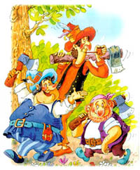

Содержание
Введение
Красная шапочка встречает волка
Коварный план волка
Красная шапочка и волк в доме бабушки
Счастливый конец
Приложения
Состав продуктов
Однажды мама напекла целый противень пирогов и говорит дочке:
- Красная Шапочка, бабушка заболела. Не отнесешь ли ты ей пирожков и горшочек свежевзбитого масла, как это указано в приведенной ниже табличке?
| № | Продукт | Количество |
|---|---|---|
| 1. | Пирожки с картошкой | 10 шт. |
| 2. | Пирожки с капустой | 10 шт. |
| 3. | Свежевзбитое масло | 1 горшочек |
Красная Шапочка тут же встала и отправилась к бабушке. А бабушка ее жила в другой деревне, за густым, диким лесом.
Проходя через лес, она встретила волка. Волк хотел было ее съесть, но побоялся, поскольку недалеко работали дровосеки. Поэтому он придумал план.
- Куда ты идешь, моя крошка? - спросил волк.
- Повидать свою бабушку, - сказала Красная Шапочка.
- У меня есть для нее горшочек свежевзбитого масла и пирожки.
- И далеко тебе идти? - спросил волк.
- Далеко, - ответила Красная Шапочка. - Ее дом довольно далеко отсюда, первый с той стороны леса.
- Я тоже хочу навестить бабушку, - сказал хитрый волк. - Я пойду этой тропинкой, а ты другой. Посмотрим, кто из нас первый доберется туда.

Волк бросился бежать изо всех сил по самой короткой тропинке, а Красная Шапочка пошла по самой длинной дорожке. Она собирала цветы, пела веселые песни, играла с красивыми бабочками. Волк тем временем добежал до бабушкиного дома. Он дважды постучал в дверь.
- Кто там? - спросила Бабушка.
- Это я, Красная Шапочка, - сказал волк голосом девочки. - Я принесла тебе пирожков и горшочек свежевзбитого масла.
 Бабушка лежала в постели, потому что болела.
Бабушка лежала в постели, потому что болела.- Открой дверь и войди, - крикнула она.
Волк ворвался в комнату. Он не ел целых три дня и был поэтому очень голоден. Он тотчас проглотил Бабушку. Потом он натянул на себя бабушкин халат, забрался на постель и стал поджидать Красную Шапочку, которая через некоторое время пришла и постучалась в дверь.
- Это я, Красная Шапочка, - сказала она. - Я принесла тебе пирожков и горшочек свежевзбитого масла.
- Открой дверь и войди, - сказал волк таким ласковым голосом, насколько мог.
 Он натянул одеяло до самых глаз.
Он натянул одеяло до самых глаз.- Поставь свою корзинку на стол и подойди ко мне, - сказал волк.
Красная Шапочка подошла поближе. Она сказала:
- Бабушка, какие у вас длинные руки!
- Это чтобы получше обнимать тебя, моя дорогая, - сказал волк.
- Бабушка, какие у вас длинные уши!
- Это чтобы лучше слышать тебя, моя дорогая.
 - Бабушка, какие у вас большие глаза! - Это чтобы получше видеть тебя, моя дорогая.
- Бабушка, какие у вас большие зубы!
- Это чтобы съесть тебя! - сказал волк и проглотил Красную Шапочку.